Aiming
Load up the project you saved at the end of the last module.
Paint a new sprite named 'Turret'.
In the drawing area, draw whatever you think your turret — your missile-firing, floating-in-space platform — should look like. Just make sure that it's about 20 × 20 pixels, and snapped to the centre. I drew a circle with spokes and a long barrel:
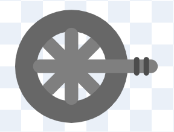Make a duplicate of that costume named 'range'. We'll use this costume to detect when an asteroid is in range of the turret, by switching to this costume and seeing if an asteroid is touching the sprite.
In the range costume, add a circle with a radial gradient from transparent to blue, snapped to the centre, and sent to the back. This circle determines the range of your turret, so it should be nice and big — about 200 × 200 pixels:
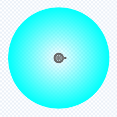If your costume is exactly 200 pixels × 200 pixels, what's the furthest it can shoot?
Right — the costume size is from one edge to the other; the distance from the turret (at the centre) to the edge is half that.
Duplicate the range costume, naming it 'aim'. We'll use this costume to aim at the in-range asteroid.
Draw a bright blue line, thickness 2, pointing to the right, starting at the centre of the drawing area and ending a few pixels past the edge of the blue circle. The line must point exactly to the right, so hold down the shift key while making it. (It's also important that it starts at the centre and ends just past the edge of the blue circle.) Now delete the blue circle and the turret, leaving only the blue line:
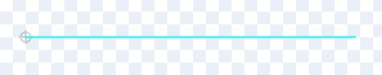We will aim the turret by turning the aim costume until it touches an asteroid. But here's the question — should we turn clockwise, or anti-clockwise?
That's a tricky question, because there are a couple of things that we want:
- the turret should keep firing at the same asteroid until it's destroyed
- given two asteroids, the turret should aim at the one nearer to Earth
Given several asteroids, which one will this plan leave us aiming at?
Correct. Let's see this in action.
Switch to the Code tab. Add a switch costume to aim.
Create a variable called angle (for this sprite only). Set it to 5 at the start of a repeat 36 loop, and increase it by 5 within the loop:
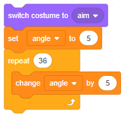Inside the loop, turn clockwise by angle, then anti-clockwise by twice angle. Finally, turn clockwise by angle once more, so that we end up pointing straight forwards, ready for the next time round the loop. Add a wait 0 seconds after the first two turns, so that the screen refreshes and shows us what's happening:
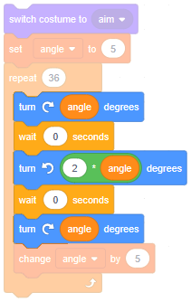Click the script to run it. What happens?
Good. Now that you've seen how this works, replace those wait 0 seconds blocks with blocks that will stop the script if the costume is touching an asteroid:
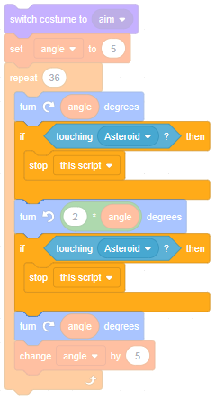Make the asteroid sprite visible and drag it in range of the turret but off to one side. Run the script — what happens?
The script runs pretty slowly. Use a Block, named Point towards asteroid, to run it without screen refresh.
There's a bug in this script — can you spot it?
Add some code at the start of the script to stop the rest of the script if we're already touching an asteroid:
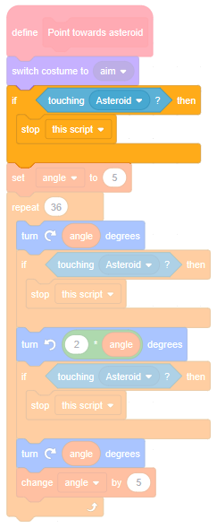Let's have the turret constantly point at an in-range asteroid. Add code so that, when the green flag is clicked, a forever loop starts. Inside the loop, switch to the range costume and see if an asteroid is touching. If so, point towards it:
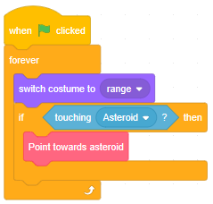Position the turret within range of the Path and click the green flag. What happens?
Good. However, if you look closely, you'll notice that the turret doesn't generally point at the centre of any asteroid. It points at the first part of the asteroid that the blue line touches, which is often the side of the asteroid. Let's make the aim more precise.
Precision
When the Point towards asteroid Block stops, the aim costume is touching an asteroid. To ensure that it's touching the centre of that asteroid, we just need to:
- turn clockwise until we stop touching the asteroid... we'll call this the 'max angle'
- turn anti-clockwise until we stop touching the asteroid... we'll call this the 'min angle'
- turn to halfway between the min angle and the max angle
Create a new Block named Point towards asteroid centre (run without screen refresh). Call this Block just before stopping the Point towards asteroid script (all three times):
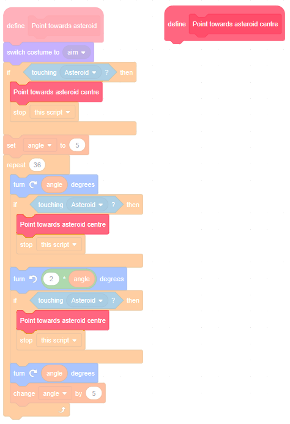Create two new variables, max angle and min angle (for this sprite only). At the start of the Point towards asteroid centre definition, set both variables to 0. Also store the current direction in angle:
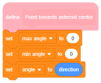Add some code to turn clockwise, one degree at a time, incrementing max angle as it goes, until we've turned too far and are no longer touching the asteroid.
Does your code look like this?
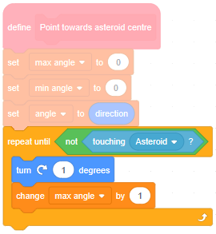Good. What does the max angle variable hold?
Right. Add some code to find out how far you can turn anti-clockwise, remembering to point the turret in the original direction (which you captured in the angle variable) before you start.
Does your code look like this?
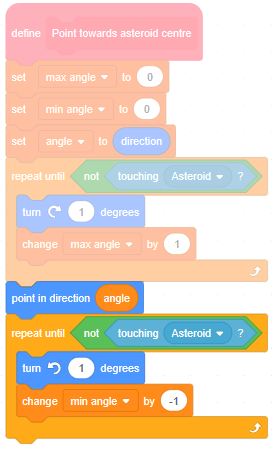Now, point the turret in the original direction, and then add the clever part — turn halfway between max angle and min angle:
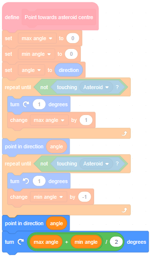Click the green flag. What happens?
Now that we know we're aiming well, we don't want to see the blue line any more. Switch to costume1 just at the end of the forever-loop:
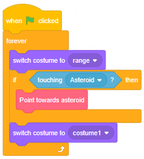Click the green flag. Does the turret still aim at the centre of the asteroids as they fly past?
Good. Time to launch some missiles.
Missiles
Paint a new sprite named 'Missile'. Zoom in, select the Line tool, a grey Outline colour, thickness 2, and draw a short horizontal line, a couple of chequered squares right of centre:
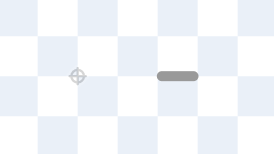Select the Circle tool, a transparent Outline colour, and set the Fill colour to a horizontal gradient, transparent to pale yellow. Draw an ellipse between the centre of the drawing area and the tail of the missile, and send it to the back. (You can use the Reshape tool to make it taper to a point if you want to.)
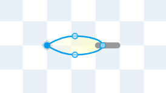Switch to the Code tab of the Turret sprite. Make a new Block named Fire (without screen refresh), and in its definition create a clone of Missile:
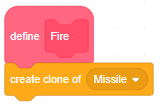What must we do to make each missile clone fly from turret to asteroid?
Right. We'll call these three things the 'missile info' — they will be used to setup each missile clone with the correct starting position and direction.
At the moment there is only one turret, but in a later module there will be many turrets. Therefore, create a list named MISSILE INFO (for all sprites). Any turret that fires a missile will add its info to this list and, whenever a missile clone is created, it will set itself up by reading from this list.
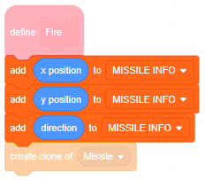Add a call to Fire right after we've aimed the turret. Also, clear out the MISSILE INFO when the green flag is clicked:
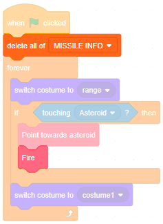Switch to the Missile sprite. Add the usual hide-template-show-clone blocks, then set the clone's x, y and direction appropriately (remembering to delete items from the list after reading them):
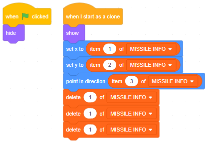Click the green flag. What happens?
We forgot to make the missiles fly! Add some code for that:
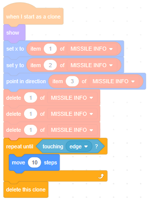Click the green flag. What happens now?
Things will look more realistic if we add a cooldown. Switch to the Turret sprite and make a new variable named time when cool (for this sprite only). Set it to 0 when the green flag is clicked:
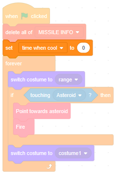Do you remember what T does?
Add some code to the Fire Block to 'bail out early' if the number of ticks hasn't yet reached the time when cool. And then, after we fire a missile, set the time when cool to T + 15, so that it takes 15 ticks until we fire again.
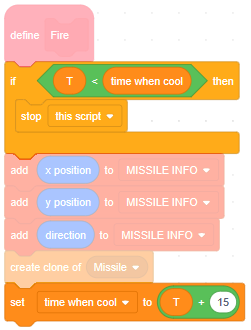Click the green flag. Are the missiles more spread out now?
Good. Let's make those asteroids explode when a missile hits them.
Exploding asteroids
Switch to the Missile sprite. In its repeat-loop, if it's touching an asteroid, broadcast a new message 'Asteroid hit':
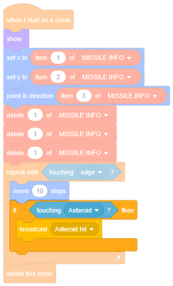How many asteroids will receive this message?
Switch to the Asteroid sprite and add a when I receive Asteroid hit. Since all asteroids will receive this message, and we only want the one touching the missile to explode, add some code to bail out early if not touching a missile:
 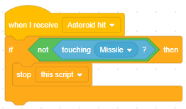
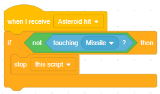
In previous modules we made asteroids explode by clicking them, so we had lots of code blocks wired up to the when this sprite clicked event. To make them explode when a missile hits them, all we need to do is pull those blocks off the sprite-clicked event, snap them onto the asteroid-hit event, and then delete the when this sprite clicked block:
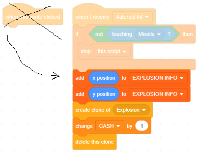
Click the green flag. Do the missiles make the asteroids explode when they hit them?
Do you spot any bugs?
Switch back to the Missile sprite. After we broadcast Asteroid hit, we don't delete the missile clone. If we were to delete it, would that cause any problems?
Do you remember that wait 0 seconds causes a screen refresh? If we wait — even zero seconds — before deleting the missile clone, it will let the when I receive Asteroid hit script run successfully first. This should fix our bug:
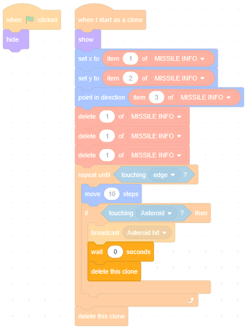Click the green flag. Are the missiles now destroyed in the explosions?
Great. One last tweak — in the Turret sprite, stop other scripts upon receiving the Game over event:

Now, click the full screen button, click the green flag, and watch your turret destroy asteroids.
Note: if your turret is far away from the Path you might find that, with the faster asteroids, the missiles sail past just behind target. In the next module, positioning will become very important, as we create a shop to buy new turrets that you can place anywhere. For now, feel free to drag your turret to a better location.
Next steps
Save your project.
In the next few modules we will:
- create a shop for buying extra turrets
Feel free to try out any of those ideas beforehand, or to try a different idea of your own instead.
What did you think of this module?
I didn't like it

It was OK

I loved it